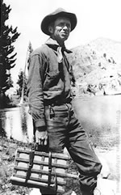

| |
|
Willis Linn Jepson (1867–1946)
Alva R. Davis, Lincoln Constance, and George D. Lauderback
|  |
| Willis Linn Jepson in the Sierra Nevada, 1911 |
Professor Jepson was born of Scotch-English stock on August 19, 1867, at Little Oak, near Vacaville, in the rolling foothills at the edge of the Great Valley. He became interested in botany as a boy and explored adjacent regions for new material, and came in contact with various botanists before he entered college. He not only developed an absorbing interest in the science, but gained a love for plants as living beings and strove for
their protection. He graduated at the University of California in 1889, and the following year became an assistant in botany and devoted his attention principally to systematic botany under the direction of E. L. Greene, pioneer taxonomist and founder of the Department of Botany. From 1895 to 1898 Jepson served as instructor, and carried on research at Berkeley, Cornell (1895) and Harvard (1896–97), and received his Ph.D. degree at California in 1899. In 1905 he studied the classical herbaria at the Royal Botanic Gardens, Kew, and in 1906 those in Berlin. He was made assistant professor in 1899, associate professor in 1911, professor in 1918, and professor emeritus in 1937. Thus, his entire career was identified with the University of California.
The Flora of California, his magnum opus, is perhaps the outstanding work on regional flora thus far produced in this country. It owes its great merit to the wealth of field observation, ecological and geographical data, profuse illustration, and careful documentation of observations and ranges by citation of specimens, as well as to the eminently sane taxonomic judgment. Because of its general usability, his manual has long enjoyed a popularity in the West comparable only to that of Gray's Manual in eastern North America. Jepson's voluminous publications will necessarily serve as the basis for all future work on the rich California flora.
 |
| Willis Linn Jepson in the Herbarium |
The editorship of Erythea was turned over to him by Greene, and he served in that capacity from 1893 to 1900. Jepson founded the California Botanical Society in 1915 as well as its journal, Madroño, which he edited until 1933. In these two journals appeared most of his shorter papers, dealing with botanical exploration and biography, geographical distribution, taxonomy, and teratology. His field work covered most of the state, and he was particularly fond of the less-known deserts, mountains, and valleys, where he reveled in the role of pioneer explorer. In 1899 he made a botanical expedition to Alaska, and in 1926 to Syria and Palestine, but the bulk of his field study was confined to California. He was an enthusiastic conservationist and served as councilor of Save-the-Redwoods League and the Point Lobos Association. Although he will be classified as an "orthodox" taxonomist, he was an ardent evolutionist and more hospitable than many of his contemporaries to the cytogenic and experimental approaches of "biosystematics."
Many honors came to him during his long, productive lifetime. His colleagues honored him with the Faculty Research Lectureship in 1934, and his University with the LL.D. in 1941. He was president of the California Botanical Society, 1913–15 and 1918–29; fellow of the California Academy of Sciences, American Academy of Arts and Science (Boston), Royal Society of Arts (London),
and American Geographical Society; delegate to the International Agricultural Congress at Liége (1906) and the International Botanical Congresses at Cambridge (1930) and Amsterdam (1935); foreign member of the Société Linnéenne de Lyon and the National Botanical Society of Czechoslovakia; councilor of the Rancho Santa Ana Botanical Garden; life member of the American Genetic Association; and member of the American Society of Plant Taxonomists, Botanical Society of America, Society of Foresters, Washington Academy of Sciences, Western Society of Naturalists, Phi Beta Kappa, and Sigma Xi.
Willis Linn Jepson died at his home in Berkeley on November 7, 1946, after a protracted illness, at the age of 79. He devoted a fruitful half century of zealous investigation to the systematic botany of his native state. His Flora of Western Middle California (1901), Silva of California (1910), Manual of the Flowering Plants of California (1923–25), and the monographic (uncompleted) Flora of California (1909–43), have firmly established him not only as the principal interpreter of the California flora but also as one of the greatest of American regional botanists. "Jepson's Manual" has been for more than twenty years the well-worn threshold for thousands of students to an understanding and appreciation of the remarkably diversified vegetation of the state.
His memory is perpetuated by the saxifragaceous genus Jepsonia, and by a host of commemorative specific names. But these tokens are insignificant in comparison with the tremendous debt owed him by every student of Californian natural history. He was remarkably successful both as a teacher and writer in communicating his great enthusiasm for the flora which he had done so much to make understandable.
 |
Davis, A.R., Constance, L., Lauderback, G.D. 1946.
Obituary of Willis Linn Jepson (1867–1946).
|
|
|